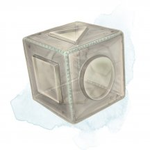
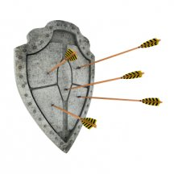
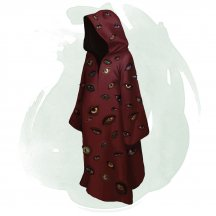
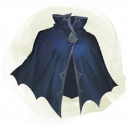
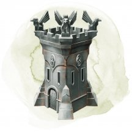
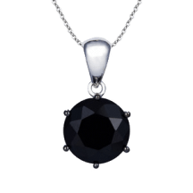
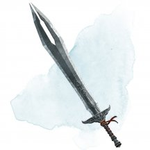
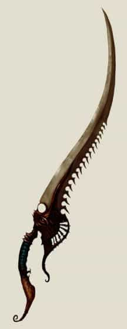

- Чудесный предмет, редкий
- Рекомендованная стоимость: 501-5 000 зм
К этому крошечному серебряному рыболовному крючку прикреплено маленькое золотое перышко. Чтобы он функционировал, пернатый крючок должен быть привязан к концу лески и погружен в достаточное количество воды, заполняемое по крайней мере 10-футовый куб. В конце каждого часа непрерывного погружения бросайте к6. При выпадении 6, на крючке появляется извивающаяся 6-дюймовая магическая рыба. Цвет и свойства магической рыбы определяются броском по таблице «Крючок рыбацкого восторга». Как только крючок призывает рыбу, он не сможет сделать это снова до следующего рассвета.
Крючок рыбацкого восторга
к20 Цвет рыбы Свойства 1-10 Зеленый с медными полосами Эта вкусная рыба обеспечивает пищей, достаточной на целый день одному существу, которое её ест. Рыба теряет это свойство и сгнивает, если её не съесть в течение 24 часов после вылова. 11-14 Желтый с чёрными полосами Сняв с крючка эту отвратительную на вкус рыбу, её можно метнуть на расстояние до 120 футов, целясь в существо, которое видит метатель. Цель должна преуспеть в спасброске Силы Сл 15 иначе падает ничком. После этого рыба исчезает. 15-18 Синий с белыми полосами Когда её снимают с крючка, она извивается, расправляет крылья и следует за вами напевая прекрасную мелодию на Акване. Она исчезает через 2к4 часа или при уменьшении хитов до 0. Рыба использует блок характеристик квиппера [quipper], за исключением того, что она может дышать воздухом и имеет скорость полёта 30 футов 19-20 Золотой с серебряными полосами Эта вкусная рыба обеспечивает пищей, достаточной на целый день одному существу, которое её ест, а так же даёт 2к10 временных хитов этому существу. Рыба теряет эти свойства и сгнивает, если её не съесть в течение 24 часов после вылова.
Магические предметы
Официальные материалы от Wizards of the Coast и от издательств, поддерживаемых этой компанией.

- Чудесный предмет, редкий (требуется настройка)
- Рекомендованная стоимость: 501-5 000 зм
Это кубик с длиной ребра около дюйма. На каждой грани есть характерная метка, на которую можно нажать. Вначале у куба 36 зарядов, и он ежедневно восстанавливает 1к20 зарядов на рассвете.
Вы можете действием нажать на одну из граней куба, тратя при этом указанное в таблице число зарядов. У каждой грани свой эффект. Если в кубе не осталось достаточного числа зарядов, ничего не произойдёт. В противном случае возникает барьер из невидимого силового поля, формирующий куб с длиной ребра 15 футов. Барьер создаётся с центром на вас, перемещается вместе с вами и существует 1 минуту, пока вы не нажмёте действием на шестую грань куба или пока в кубе не кончатся заряды. Вы можете изменить эффект барьера, нажав на другую грань куба и потратив нужное количество зарядов, сбрасывая при этом счётчик длительности.
Если из-за перемещения барьер вступает в контакт с твёрдым предметом, который не может пройти сквозь поле, вы не сможете приблизиться к этому предмету, пока поле существует.
Грань Заряды Эффект 1 1 Через барьер не проходят газы, ветер и туман. 2 2 Через барьер не проходит неживая материя. Стены, пол и потолок могут проходить, если вы того пожелаете. 3 3 Через барьер не проходит живая материя. 4 4 Через барьер не проходят эффекты заклинаний. 5 5 Через барьер не проходит ничего. Стены, пол и потолок могут проходить, если вы того пожелаете. 6 0 Барьер исчезает. Куб теряет заряды, когда барьер становится целью определённых заклинаний или вступает во взаимодействие с эффектами определённых заклинаний или магических предметов, как показано ниже.
Заклинание или предмет Потеря зарядов Огненная стена [wall of fire] 1к4 Радужные брызги [prismatic spray] 1к20 Распад [disintegrate] 1к12 Рог взрыва [horn of blasting] 1к10 Создание прохода [passwall] 1к6
- Чудесный предмет, редкий (требуется настройка)
- Рекомендованная стоимость: 501-5 000 зм
Похоже, этот плащ сделан из сплетённых вместе осенних листьев. Пока вы носите этот плащ, вы с преимуществом совершаете проверки Ловкости (Скрытность) и бонусным действием можете магическим образом телепортироваться вместе со всем несомым и носимым снаряжением в незанятое пространство, которые вы можете видеть в пределах 30 футов. После этого вы с преимуществом совершаете следующий бросок атаки до конца хода. Вы не можете повторно использовать это бонусное действие до следующего рассвета.
- Чудесный предмет, редкий
- Рекомендованная стоимость: 501-5 000 зм
Всадники колесницы и существа, тянущие колесницу, получают бонус +1 к своему КД.
Если эта магическая колесница запряжена одним или несколькими летающими существами, она так же способна летать.
Колесница
Колесницы и существа, тянущие их, функционируют как контролируемый скакун, как описано в правиле «Сражения верхом» из «Книги игрока», но со следующими отличиями:
- Посадка или спешивание из колесницы требует 5 футов движения, а не половину скорости.
- Сидя в колеснице, вы получаете укрытие на половину.
- Скорость колесницы равна скорости самого медленного существа, тянущего её.
- Если колесницу тянут несколько существ, то все они действуют по одной инициативе, и они должны совершать одно и то же действие в свой ход.
Лира Кли [Cli lyre]DMG14 DMG24
- Чудесный предмет, редкий (требуется настройка бардом)
- Рекомендованная стоимость: 501-5 000 зм
Существо, пытающееся играть на инструменте, не будучи настроенным на него, должно преуспеть в спасброске Мудрости Сл 15, иначе получит урон психической энергией 2к4.
Вы можете действием сыграть на инструменте и наложить одно из его заклинаний: защита от зла и добра [protection from evil and good], изменение формы камня [stone shape], левитация [levitate], невидимость [invisibility], огненная стена [wall of fire], полёт [fly], стена ветров [wind wall]. После того как инструмент использован для наложения заклинания, он не может повторно накладывать это заклинание до следующего рассвета. Заклинания используют вашу базовую характеристику и Сл спасбросков от ваших заклинаний.
Вы можете играть на инструменте при наложении заклинания, которое делает цели очарованными при провале спасброска, тем самым давая целям помеху на этот спасбросок. Этот эффект применяется только если заклинание имеет соматический или материальный компонент.
Варианты этого предмета: Арфа Анструт • Лютня Досс • Мандолина Канаит • Лира Кли • Арфа Оллава • Бандура Фоклучан • Цитра Мак-Фуирми
- Чудесный предмет (инструмент), редкий (требуется настройка)
- Рекомендованная стоимость: 501-5 000 зм
Действием вы можете начать играть на этой лире и с её помощью наложить одно из следующих заклинаний: внушение [suggestion], дружба с животными [animal friendship], очарование личности [charm person], речь златоуста [enthrall]. Сл спасброска для заклинаний 13.
После того, как вы наложите с помощью инструмента одно из этих заклинаний, вы не можете наложить его повторно с помощью инструмента до следующего рассвета.
- Чудесный предмет, редкий (требуется настройка бардом)
- Рекомендованная стоимость: 501-5 000 зм
Держа эту лиру, вы можете накладывать заговор починка [mending] действием. Вы также можете сыграть на лире реакцией и, если объект или строение, которые вы можете видеть в пределах 300 футов должны получить урон, наделить цель иммунитетом к этому урону и любому последующему урону того же типа до начала вашего следующего хода.
Кроме того, вы можете сыграть на лире действием, чтобы наложить заклинание движение почвы [move earth], изготовление [fabricate], призыв духа конструкта [summon construct] или создание прохода [passwall]. Наложенное заклинание не может быть наложено при помощи лиры снова до следующего рассвета.

- Доспех (щит), редкий (требуется настройка)
- Рекомендованная стоимость: 501-5 000 зм
Вы получаете бонус +2 к КД от дальнобойных атак, пока носите этот щит. Этот бонус идёт в дополнение к обычному бонусу щита к КД. Кроме того, каждый раз, когда кто-нибудь совершает дальнобойную атаку по цели, находящейся в пределах 5 футов от вас, вы можете реакцией вместо этого сделать целью атаки себя.
- Оружие (любой лук), редкое (требуется настройка)
- Рекомендованная стоимость: 501-5 000 зм
Боеприпасы, выпущенные из этого лука, ярко сверкают. Когда вы совершаете бросок атаки из этого лука, цель получает дополнительно 1к6 урона огнём . Если целью является легковоспламеняющийся немагический объект, он загорается, получая 1к6 урона огнём в начале каждого вашего хода, пока существо не использует действие для тушения пламени.
- Чудесный предмет, редкий (требуется настройка заклинателем)
- Рекомендованная стоимость: 7 500 зм
Задача этого богато украшенного сиденья заключается в том, чтобы в воздухе и космосе управлять перемещением корабля, на котором оно установлено. Сиденье также может управлять кораблём и перемещать его по воде или под водой, если он предназначен для подобных перемещений. Такой корабль должен весить не менее 1 тонны.
Ощущение настройки на магический руль похоже на покалывание, которые вы испытываете, когда затекает рука или нога, но менее болезненно.
Пока вы настроены на магический руль и сидите на нём, вы получаете следующие преимущества, пока поддерживаете концентрацию (как если бы вы концентрировались на заклинании):
- Вы можете использовать магический руль для перемещения корабля по космосу, воздуху или воде на расстояние вплоть до скорости корабля. Если корабль находится в космосе, и в пределах 1 мили от него нет других объектов весом как минимум в 1 тонну, вы можете использовать магический руль для перемещения корабля со скоростью, достаточной для преодоления 100 миллионов миль за 24 часа.
- Вы можете поворачивать корабль, хоть и несколько неуклюже. Это похоже на то, как для маневрирования морским кораблём можно использовать обычный штурвал или вёсла.
- В любое время вы можете видеть и слышать, что происходит на корабле и вокруг его, словно вы стоите в выбранном вами месте на борту.
Передача настройки. Вы можете действием коснуться согласного заклинателя. Это существо мгновенно настраивается на магический руль, а ваша настройка на него заканчивается.
Стоимость магического руля
Магический руль управляет кораблём так же, как работают паруса, вёсла и штурвалы на обычном морском корабле, и его легко создать, если у вас есть подходящее заклинание. Для заклинания сотворение магического руля [creating spelljamming helm] необходим материальный компонент стоимостью 5 000 зм, так что эта сумма является наименьшей, которую заплатят при приобретении магического руля.
У купцов Дикого космоса, включая доваров [dohwar] и мерканов [mercane], цены на магический руль, как правило, сильно больше по сравнению со стоимостью создания руля. Насколько сильно — зависит от рынка, но 7 500 зм выглядят разумной ценой. Отчаявшийся же покупатель на рынке продавца может отдать все 10 000 зм и даже больше.
- Чудесный предмет, редкий (требуется настройка бардом)
- Рекомендованная стоимость: 501-5 000 зм
Существо, пытающееся играть на инструменте, не будучи настроенным на него, должно преуспеть в спасброске Мудрости Сл 15, иначе получит урон психической энергией 2к4.
Вы можете действием сыграть на инструменте и наложить одно из его заклинаний: защита от зла и добра [protection from evil and good], защита от энергии [protection from energy] (только от электричества), левитация [levitate], лечение ран [cure wounds] (3-го уровня), рассеивание магии [dispel magic], невидимость [invisibility], полёт [fly]. После того как инструмент использован для наложения заклинания, он не может повторно накладывать это заклинание до следующего рассвета. Заклинания используют вашу базовую характеристику и Сл спасбросков от ваших заклинаний.
Вы можете играть на инструменте при наложении заклинания, которое делает цели очарованными при провале спасброска, тем самым давая целям помеху на этот спасбросок. Этот эффект применяется только если заклинание имеет соматический или материальный компонент.
Варианты этого предмета: Арфа Анструт • Лютня Досс • Мандолина Канаит • Лира Кли • Арфа Оллава • Бандура Фоклучан • Цитра Мак-Фуирми

- Чудесный предмет, редкий (требуется настройка)
- Рекомендованная стоимость: 501-5 000 зм
Эта мантия украшена узором в виде глаз. Пока вы носите её, вы обладаете следующими преимуществами:
- Мантия позволяет вам видеть во всех направлениях, и вы совершаете с преимуществом проверки Мудрости (Восприятие), полагающиеся на зрение.
- Вы обладаете тёмным зрением в пределах 120 футов.
- Вы можете видеть невидимых существ и предметы, а также ваше зрение простирается на 120 футов на Эфирный План.
Заклинание свет [light], наложенное на эту мантию, или заклинание дневной свет [daylight], наложенное в пределах 5 футов от мантии, вызывает у вас ослепление на 1 минуту. В конце каждого своего хода вы можете совершать спасброски Телосложения (Сл 11 для света или 15 для дневного света), оканчивая ослепление при успехе.
- Чудесный предмет, редкий (требуется настройка)
- Рекомендованная стоимость: 501-5 000 зм
Это красивое облачение сшито из прекрасной ткани в красных, оранжевых и золотых оттенках. Пока вы облачены в эту мантию, вы получаете сопротивление урону холодом. Кроме того, вы чувствуете себя так, будто стоит прекрасный летний день, и не получаете негативных эффектов от природных экстремально высоких и низких температур. (Глава 5 «Руководства мастера»)
- Чудесный предмет, редкий (требуется настройка)
- Рекомендованная стоимость: 501-5 000 зм
Эта темная мантия с капюшоном из плотной ткани наполнена таинственной и обманчивой магией. Нося её, вы получаете следующие преимущества:
Тёмное зрение. Вы получаете тёмное зрение в радиусе 60 футов. Если у вас уже было тёмное зрение, мантия увеличивает его дистанцию на 60 футов.
Движение в тенях. Если вы находитесь в темноте или пространстве с тусклым освещением, вы можете бонусным действием телепортироваться на 30 футов в другое тусклое или тёмное свободное пространство, которое видите. Свою первую рукопашную атаку до конца текущего хода вы совершите с преимуществом.
Умышленная вражда. Вы можете наложить заклинание враждебность [antagonize] (Сл спасброска 15) из мантии. После того как мантия наложила заклинание, она не сможет наложить его снова до следующего рассвета.

- Чудесный предмет, редкий (требуется настройка)
- Рекомендованная стоимость: 501-5 000 зм
Вы совершаете с преимуществом спасброски от заклинаний, пока носите этот плащ.
- Зелье, редкое
- Рекомендованная стоимость: 251-2 500 зм
Крошечные капли этого серого масла очень быстро испаряются. Маслом можно обмазать одно существо Среднего или меньшего размера, вместе с одеждой и переносимым им снаряжением (на каждую категорию размера выше Среднего необходим один дополнительный пузырёк масла). Нанесение масла занимает 10 минут. Обмазанное существо получает на 1 час эффект заклинания эфирность [etherealness].

- Чудесный предмет, редкий
- Рекомендованная стоимость: 501-5 000 зм
Вы можете действием поместить этот металлический кубик с длиной ребра 1 дюйм на пол и произнести командное слово. Куб быстро вырастет в крепость, которая остаётся, пока вы не произнесёте действием командное слово, которое сработает только если крепость пуста.
Крепость является квадратной башней 20 × 20 футов и 30 футов высотой, с бойницами и зубчатой стеной сверху. Внутри она поделена на два этажа, соединённых лестницей, идущей вдоль одной из стен. Лестница заканчивается наверху люком. После активации в ближайшей к вам стене будет небольшая дверь. Дверь открывается только по вашей команде, которую вы произносите бонусным действием. Она обладает иммунитетом к заклинанию открывание [knock] и подобной магии, например, к колокольчику открывания [chime of opening].
Все существа, находящиеся в области, в которой появляется крепость, должны совершить спасбросок Ловкости Сл 15, получая дробящий урон 10к10 при провале или половину этого урона при успехе. В любом случае, такое существо выталкивается в ближайшее свободное пространство вне крепости. Предметы в этой области, которые никто не несёт и не носит, получают этот же урон и автоматически толкаются.
Башня изготовлена из адамантина, и магия не даёт её опрокинуть. У крыши, двери и стен по 100 хитов, иммунитет к урону от немагического оружия, исключая осадное оружие, и сопротивление ко всем остальным видам урона. Чинить крепость можно только заклинанием исполнение желаний [wish] (это считается дублированием заклинания с уровнем ниже 9). Каждое накладывание этого заклинания восстанавливает крыше, двери или одной из стен 50 хитов.

- Чудесный предмет, редкий
- Рекомендованная стоимость: 501-5 000 зм
На этой изысканной серебряной цепочке висит подвеска из чёрного драгоценного камня бриллиантовой огранки. Пока вы её носите, яды не оказывают на вас эффекта. Вы обладаете иммунитетом к состоянию отравленный и к урону ядом.

- Оружие (любой меч), редкое (требуется настройка)
- Рекомендованная стоимость: 501-5 000 зм
Если вы атакуете этим магическим оружием существо, и при броске атаки выпадает «20», эта цель получает дополнительные 10 урона некротической энергией, если не является ни конструктом ни нежитью. Вы также получаете 10 временных хитов.

- Оружие (любой меч), редкое (требуется настройка)
- Рекомендованная стоимость: 501-5 000 зм
Хиты, потерянные из-за урона этим оружием, могут восстановиться только за счёт короткого или продолжительного отдыха, а не за счёт регенерации, магии и других средств.
Один раз в ход, когда вы попадаете по существу атакой, используя это магическое оружие, вы можете ранить цель. В начале каждого своего хода раненое существо получает урон некротической энергией 1к4 за каждое ранение, а потом совершает спасбросок Телосложения Сл 15, оканчивая эффекты всех таких ран на себе при успехе. В качестве альтернативы, раненое существо или любое существо в пределах 5 футов от неё может действием совершить проверку Мудрости (Медицина) Сл 15, оканчивая эффект таких ран на нём при успехе.
- Чудесный предмет, редкий
- Рекомендованная стоимость: 501-5 000 зм
Эта короткая трубка, около 2-х футов в длину и 6 дюймов в диаметре, сделана из мизия, магического сплава металлов, выкованного Лигой Иззет. Конец, направленный на цель открыт, а на другом конце можно увидеть светящийся шар расплавленного металла, пока у мортиры остается по крайней мере 1 заряд.
Мортира имеет 4 заряда для активации следующих свойств. Она восстанавливает 1к4 израсходованных заряда ежедневно на рассвете.
Расплавленные брызги. Действием, вы можете потратить 1 заряд, чтобы выпустить 30-футовый конус расплавленного мизия. Каждое существо в этой области должно совершить спасбросок Ловкости Сл 15, получая 5к4 урона огнём при провале и вдвое меньше урона при успехе.
Миззиумная бомбардировка. Действием, вы можете потратить 3 заряда, чтобы запустить град расплавленных снарядов в цилиндр радиусом 20 футов и высотой 40 футов, центрированный в точке, которую вы можете видеть в пределах 60 футов. Каждое существо в этой области должно совершить спасбросок Ловкости Сл 15, получая 5к8 урона огнём при провале и вдвое меньше урона при успехе.
- Доспех (средний, тяжёлый), редкий
- Рекомендованная стоимость: 501-5 000 зм
Этот доспех усилен магическим сплавом металлов под названием миззий, который производится в литейных цехах Иззета. Пока вы облачены в эти доспехи, все критические попадания по вам считаются обычными попаданиями. Кроме того, когда вы подвергаетесь магическому воздействию, которое позволяет вам совершить спасбросок Силы или Телосложения, чтобы получить только половину урона, вы вместо этого не получаете никакого урона, при успешном спасброске.
- Чудесный предмет, редкий (требуется настройка)
- Рекомендованная стоимость: 501-5 000 зм
Это устройство в форме черепа наполнено знаниями. Устройство весит 5 фунтов и покрыто тонкой гравировкой планарных сигилов.
Бонусным действием вы можете подбросить устройство в воздух, после чего оно начнёт парить на расстоянии 1к3 фута от вас и вы сможете получить доступ к его свойствам. Пока Мимир парит, существо, отличное от вас, может действием попытаться схватить или связать устройство, либо успешно совершив безоружный удар против КД 22, либо успешную проверку Ловкости (Акробатика) Сл 22. Вы можете бонусным действием схватить и спрятать устройство.
Устройство имеет КД 22, 25 хитов, иммунитет к яду и психическому урону, а также сопротивление другим видам урона. Считается, что это носимый предмет, пока он парит рядом с вами.
Эзотерические знания. Пока устройство парит, вы можете действием наложить знание легенд [legend lore] устройством. Устройство произносит раскрытые знания вслух. После того, как это свойство будет использовано, его нельзя будет использовать снова до следующего рассвета.
Планарное знание. Устройство знает основную полезную информацию о планах существования. Пока устройство парит, оно устно отвечает на вопросы, которые вы или кто-либо, кого вы выбираете, задаете ему по этой теме. Он знает информацию о планах из «Руководства Мастера», а также базовую информацию о городах-воротах Внешних земель.
- Доспех (полулаты), редкий
- Рекомендованная стоимость: 501-5 000 зм
Вы получаете бонус +1 к КД, когда вы носите эти полулаты, носящие знак Железных Работ Даргуна.
Мифрил - это лёгкий и гибкий металл. Сделанная из мифрила кольчужная рубаха или кираса может носиться под обычной одеждой. Если в обычном исполнении доспех накладывает помеху на проверки Ловкости (Скрытность) или имеет требования к Силе, то в версии из мифрила он не обладает этими недостатками.
- Чудесный предмет, редкий (требуется настройка)
- Рекомендованная стоимость: 501-5 000 зм
Этот деревянный молоток мал по гигантским меркам, но почти размеров боевого молота для человека. Руна Венн (друг) начертана мифрилом у основания древка. Среди гигантов этот молоток используется как часть ритуалов для разрешения споров. Молоток обладает следующими свойствами.
Щит арбитра. В начале каждого боя, атаки по вам проходят с помехой до начала вашего первого хода, при условии, что молоток у вас.
Связь дружелюбия. Действием, вы можете использовать молоток, чтобы ударить им по твёрдой поверхности. В течение следующей минуты, первое существо в пределах 60 футов от места удара, наносящее урон другому существу, получает урон психической энергией, равный половине нанесённого им урона цели.
Как только вы воспользуетесь этим свойством, вы не можете им более воспользоваться пока не совершите короткий или продолжительный отдых.
Дар правды. Вы можете перенести магию молотка в другое место нарисовав руну Венн на земле пальцем. Это место становится центром сферической области магии, радиусом 30 футов, закреплённой за этим местом. Перенос требует 8 часов работы, и чтобы молоток находился в 5 футах от вас. В конце этого ритуала, молоток уничтожается, а область получает следующие свойства:
- Если существо говорит ложь, находясь в этой сфере 30 футового радиуса, это существо получает 5 урона психической энергией и заметно вздрагивает.